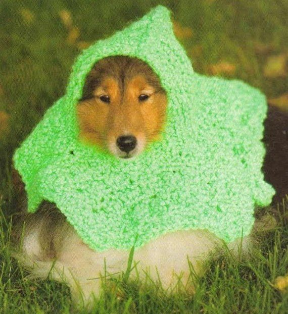
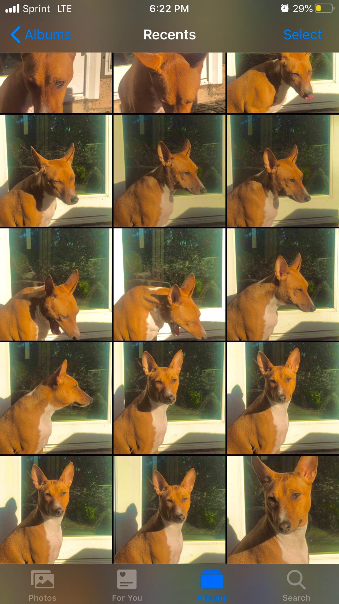
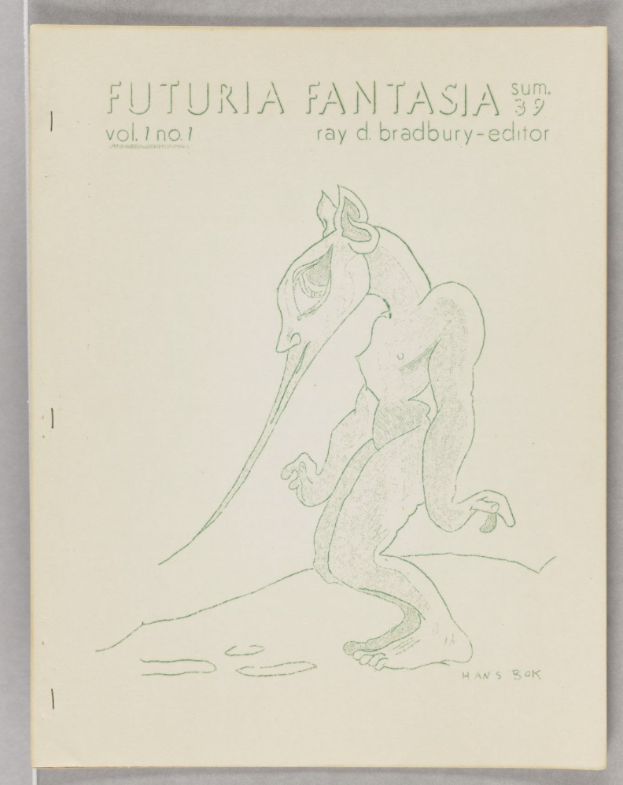
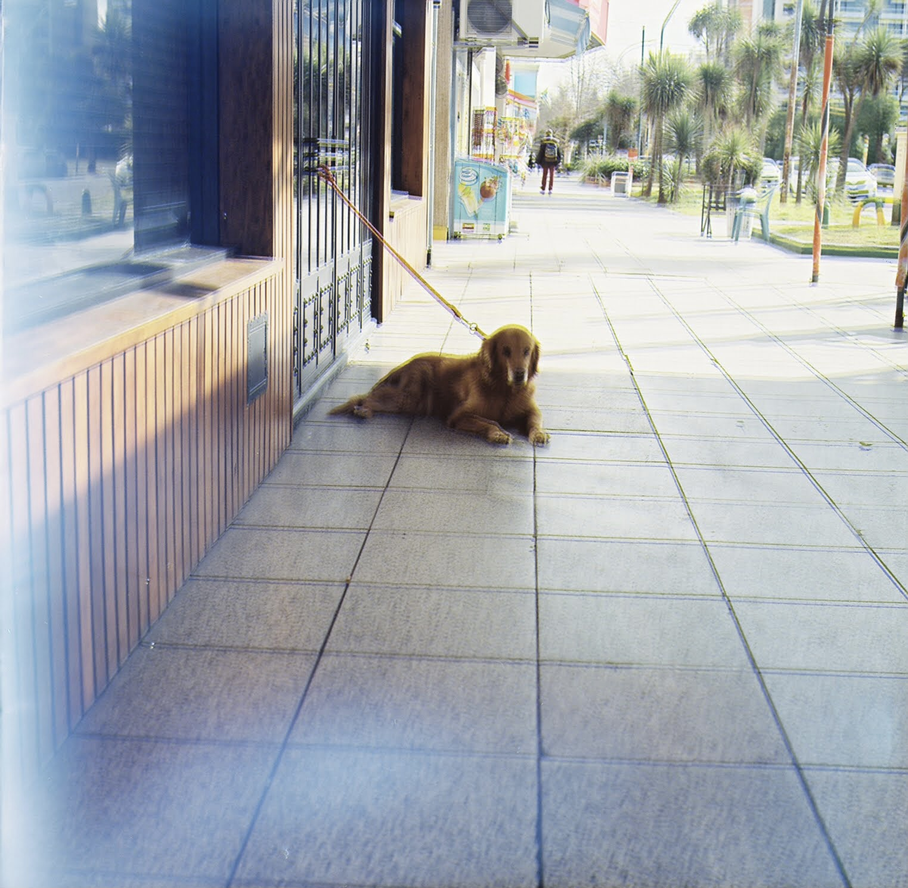
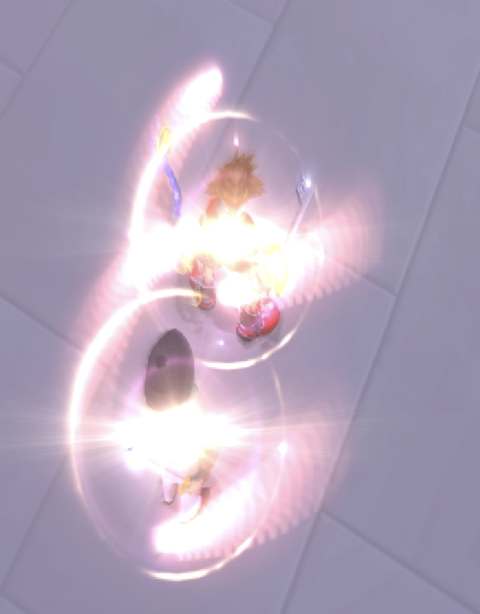
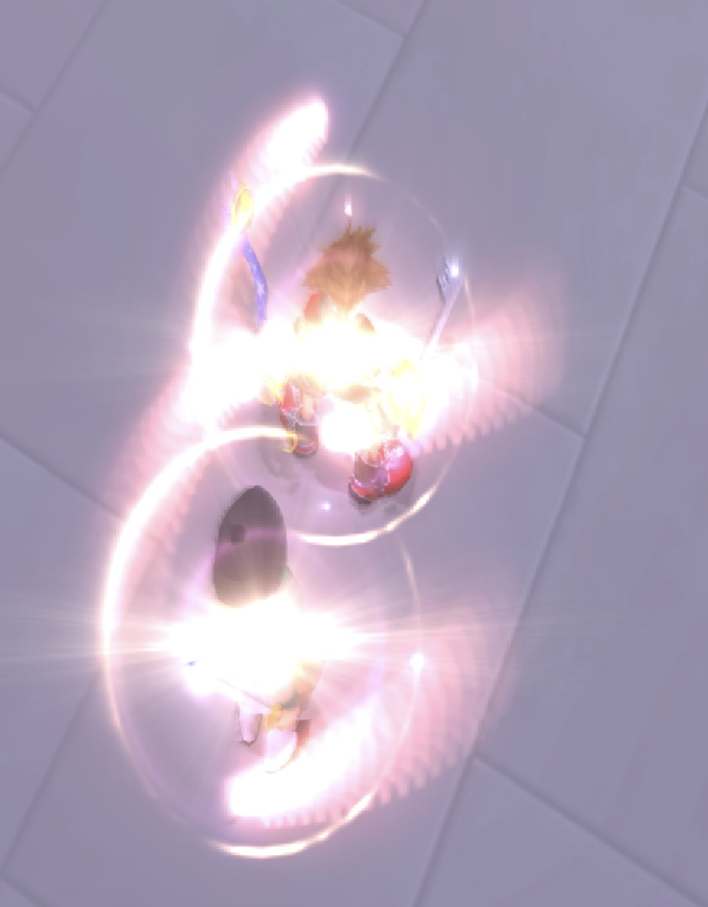

Cashin Gianni was the one who really got me into making music so for as long as I’ve been making music, I’ve been making music with Gianni. We always just played around and eventually found ourselves sitting on a pretty hill of tunes and sorta decided to release something. The stuff that we were making at the time had distinct sort of form and sound to it so we decided to create a whole persona for it.
Gianni Cashin and I met in 7th grade but didn’t become close friends until our last year of high school. After that I think we influenced each other's music tastes quite a bit and started to get interested in making similar styles. It wasn’t until the end of 2019 we started to make things we were willing to release together. The name Music for Dogs came when we saw Cashin’s mom put on music for their pup, Mika, while she went to work. Mika is the dog on the cover of our first album. ///
how do you work on music together while living in different cities?
G The first album, we were able to make together entirely because I had spent most of the summer in California after my first year of school here. We finished up the album at the end of 2019 when I came back for the winter. Spoor was made mostly over Discord jams we had over quarantine (save 1 or 2 tracks we made in person). We incorporated some tunes from live streams we did for Cached Media/An Open Space and arranged the tracks semi-independently. The next album is also all tracks we made remotely but I’m hoping to get out there sometime in March to finalize them and possibly make a few more
a voice memo that informed or was included in a track on spoor or music for dogs?
G Little voice memo Cashin took from when we were making the first album. This track didn't make the final cut but it fits with the feel of the project.
how do you your image and sound making practices relate and inform each other?
CInitially my visual work was created tandem to my music, serving as backdrops for social posts or album covers. But recently I’ve started to remove the two from each other and start focusing on ways I can make my visual art have its own purpose and space. I really try to explore form a lot in my work and drawing is another outlet for me to experiment with it.
GI can’t think of any links between my personal sound and image work (other than creating images for different projects) but for Music for Dogs we get a lot of inspo from casual research online through different auction sites or google image searches. My flutes have a clear connection between sound/image but I hope to incorporate sound into more clay objects
some images / videos / visual things that inspired tracks on spoor or music for dogs?
G




what makes music "ambient" to you?
CI think it's useful as a description but I don't think anyone can say what makes something ambient or not. The term ambient was coined with a close minded take on certain styles which I don't think belongs in music. Call your music what you want to call it.
GI can’t think of anything I can say that hasn’t already been said but I think it’s generally anything that the artist or listener wants it to be. There are undoubtedly a lot of ambient elements in our music but if it weren’t up to streaming services, we would label our genre as something arbitrary like Pet Music. We use a variety of styles in our tunes and it can feel odd to put them all under one ambient umbrella.
what kinds of processes did you use while making the sounds on the record that mix new and old technologies?
CI think we really just like to collage in our DAWs. A lot of our music is really loose and whimsical so strict timing isn’t really important, so taking some tape loop and some midi arrangement or woodwind solo or field recording and colliding them can create cool relationships.
GWe were pretty obsessed with tape during our first album and incorporated it into a bunch of the tracks. We spent a lot of time setting up our own stations with tape players, pedals, small samplers, toy synths, conventional instruments, etc. and played most of our tunes live. The second album became more about arranging but we spent a lot of time routing audio through Discord and Ableton to try and replicate that feeling of improvising in person. We tried our best to use the buffer and delay to our advantage. I personally used to spend a lot of time setting up hardware but now make music almost exclusively on my computer and incorporate different instruments and samples.
 
